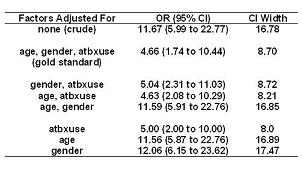

Example: Backwards Strategy - MRSA
Lead Author(s): Jeff Martin, MD
Kleinbaum provides an example of using backwards strategy to adjust for potential confounders.
Research Question
Research question: Is prior hospitalization associated with the presence of methicillin-resistant S. aureus (MRSA)? (from Kleinbaum)
Outcome variable: MRSA (present or absent)
Primary predictor: prior hospitalization (yes/no)
Potential confounders: age (<55, >55), gender, prior antibiotic use (atbxuse; yes/no)
The potential confounders are age, dichotomized as less than or greater than 55 years old, gender, and prior antibiotic use.
The table below shows the various odds ratios.
- In the first column, we show the factors that are adjusted for.
- In the middle column we show the odds ratio and its 95% confidence interval for the set of variables adjusted for.
- In the far right column is the width of the confidence interval.

Crude Odds Ratio
In the first line is the crude measure of association between prior hospitalization and presence of MRSA.
- The crude odds ratio is 11.67.
Adjust for All Three Confounders
In the second line is the odds ratio when we adjust jointly for all three potential confounders.
- The odds ratio is 4.66, which is very different than 11.67.
- Hence, we would all conclude that confounding is occurring here.
Drop Age
What happens if we then drop age?
- The odds ratio is now 5.04, which is within 10% of the gold standard of 4.66.
- Hence, it might be reasonable to eliminate age.
Drop Gender
What if we drop gender?
- The odds ratio is 4.63, also not different than 4.66, the gold standard.
- It may be reasonable to drop gender.
Drop Antibiotic Use
What if we drop prior antibiotic use?
- You could have guessed that if age and gender did not have much an effect but the gold standard adjustment containing all three factors did, then prior antibiotic use should have an effect.
- Indeed, when antibiotic use is dropped, as shown in the line containing just age and gender, then the odds ratio is 11.59, very different from the gold standard.
What if you just adjusted for antibiotic use alone? The resulting odds ratio is 5.0, again not very different from the gold standard.
Reporting Odds Ratio
Now it is time to report your final result? Which odds ratio would you use?
From a validity perspective, you could choose the gold standard or any of the lines where the odds ratio is within 10% of 4.66.
Examine what has happened to the confidence interval.
- When we adjusted for all three variables, the width was 8.78.
- However, when we only adjust for the antibiotic use variable the confidence interval is narrower, 8.0.
A good compromise to the bias-variance tradeoff is to choose the estimate that adjusts for antibiotics only.
- There is little lost in bias and little given up in variance.
References
Kleinbaum, D. G., Sullivan, K. M., & Barker, N. D. (2003). ActiveEpi Companion Text: Springer Publishers.